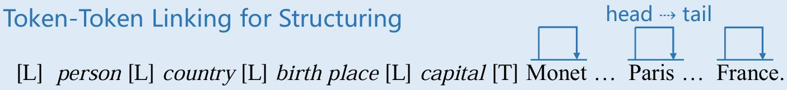
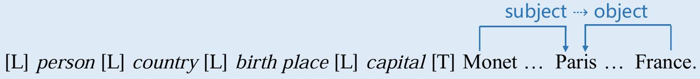
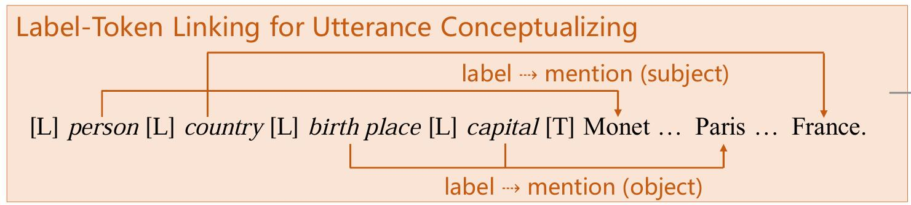
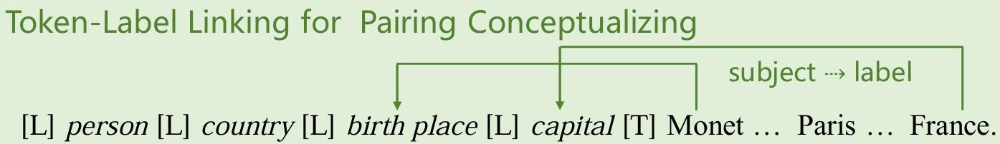
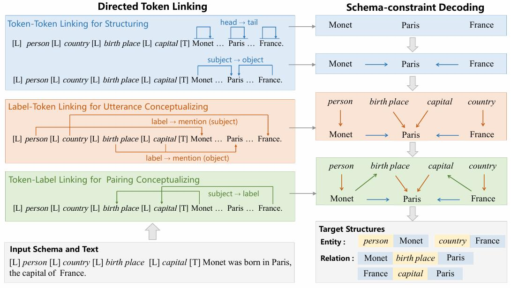
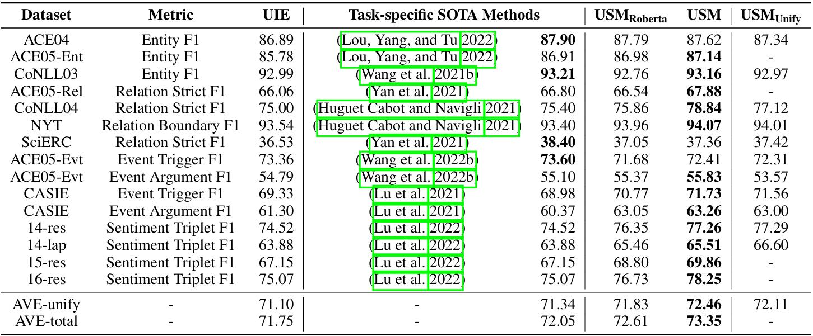
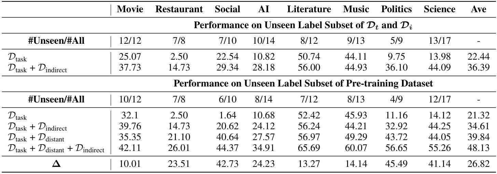
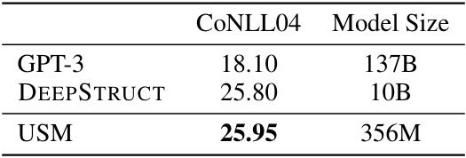

论文：https://arxiv.org/abs/2301.03282
Accepted by AAAI2023
上一篇我们介绍了UIE，它采用了文本-结构、seq2seq的生成方法。这一方法具有"黑盒"特性，信息片段(如实体、关系、关键词等)和模式(如输出结构)之间的关联是隐式的，这可能导致以下问题：
- 由于模型在生成过程中不显式地展示哪些信息片段与模式相关联，因此难以判断模型学到了哪些知识。无法判断它是否真正理解了实体关系，还是仅仅是在模拟训练数据的表面模式。
- 由于信息片段和生成模式的关联是隐式的，在迁移到新的任务或模式时，模型是否能够正确应用已有知识变得难以预测。
Note：输入的信息被编码器编码成一组上下文向量，这些向量包含了输入的所有信息。但这些向量本身是高度抽象的，并没有显式地表示出输入中的特定信息片段(如重要的实体或关系)。而输出的每一步依赖于隐含的上下文向量和之前的输出，这种生成方式也没有显式地表现模型是如何将某些输入信息片段映射到具体的输出部分的。由于这些关联是隐含的，很难解释模型在生成过程中是如何决策的。例如，模型可能在输出中提到了某个关键实体，但难以追踪它是根据哪个输入信息片段得出的。
因此，作者认为，为了确保有效、稳健和可解释的迁移能力，显式建模和学习可迁移的知识是必要的。
Unified Semantic Matching via Directed Token Linking
Schema-Text Joint Embedding
为了让模型理解标签模式(schema)和文本之间的关联(同时捕捉标签和文本之间的语义关系)，USM对提取模式(schema)和文本token进行共同编码，从而生成它们的联合上下文嵌入：
- 提取模式词序列化：USM将提取模式（schema）表示为一个词序列。例如，如果提取模式是“person”和“location”这样的标签，USM会将这些标签转换为词序列形式，即{$l_1,l_2,…,l_{|l|}$}。(类似文本token)
- 拼接schema和文本：USM将词序列化后的schema sequence与文本token{$t_1,t_2,…,t_{|t|}$}进行拼接，一起作为模型的输入。
- Transformer编码器：拼接后的词序列和文本通过一个Transformer编码器进行处理，计算出联合的上下文嵌入H，表示为$[h_1,h_2,…,h_{|l|+|t|]$。
- Mask矩阵：M是一个Mask矩阵，用来决定哪些标签或文本token可以互相“看到”(self-attention)，从而捕捉它们之间的交互关系。
最终，联合标签-文本嵌入可以表示为：
$$ H = Encoder(l_1,l_2,...,l_{|l|},t_1,t_2,...,t_{|t|},M) $$Token Linking Operations
要实现UIE，还是要对不同IE任务进行统一建模。
类似UIE的定位(Spotting)和关联(Associating)，作者将IE任务解耦为两个操作：
- 结构化(Structuring)：从文本中抽取出与标签无关的基本子结构。例如，实体抽取"Monet"；事件触发词"born in"；关系实体对(“Monet”，“Paris”)；事件论元(“born in”，“Paris”)。
- 概念化(Conceptualizing)：在概念化阶段将这些具体子结构与语义标签相连接。例如：“Monet"可以标记为"person”。
其中，结构化通过Token-Token Linking (TTL)操作实现，概念化通过Label-Token Linking (LTL)和Token-Label Linking (TLL)操作实现。
Token-Token Linking for Structuring (TTL)
前面我们提到，结构化的目标是要提取出文本中的基本信息单元(如实体、关系、触发词等)。这些基本信息单元是一组连续的token序列，我们需要知道单个信息单元是从哪里开始、又从哪里结束。
而部分IE任务所需的结构可能包括不止一个信息单元，例如{“Monet”, birth place, “Paris”}就是一个三元组的形式，此时，我们则需要找到Subject-Object对。
作者设计了TTL操作，从两个方面对输入文本中所有有效的子结构进行构造：
- Utterance(文本)：指输入文本中的连续token序列，例如实体(如“Monet”)或事件触发词(如“born in”)。

如图所示，其实就是将头和尾链接(H2T)。例如，为了提取span“Monet”和“born in”作为有效的子结构，USM利用H2T将“Monet”链接到自身来提取“Monet”，并将“born”链接到“in”以提取“born in”。 - Association Pair(文本对)：从文本中提取的基本关联对单元，例如关系的Subject-Object对(如“Monet”和“Paris”)或事件触发词-参数对(如“born in”和“Paris”)。

如图所示，链接关联对是将头与头链接(H2H)、尾与尾链接(T2T)。例如，要提取Subject-Object对“Monet”和“Paris”，USM通过H2H将“Monet”和“Paris”链接起来，同时也通过T2T链接这两个token。
USM通过计算每对有效token对$<t_i,t_j>$的链接分数$s_{TTL}(t_i,t_j)$(表示token之间的相似度或相关性，高分数意味着这两个token在上下文中有较强的关联性，适合进行链接)来实现上述的H2T、H2H和T2T链接操作。链接分数的计算公式如下：
其中，FFNN为前馈神经网络层，用于处理token的嵌入信息。$R_{j-i}$是一个旋转位置嵌入(用于编码token之间的相对位置关系)。通过这种方式，模型可以捕捉到token之间的相对位置关系。
Label-Token Linking for Utterance Conceptualizing (LTL)
结构化是从Utterance和Association Pair两个方面来进行处理的，概念化也是如此。首先考虑Utterance的概念化，包括两种类型：

- Type of Mention：将标签类型直接分配给span。例如，将实体“Monet”标记为类型“person”，“France”标记为类型“country”。
- Predicate of Object：将关系标签分配给Association Pair中的Object。例如，“Paris”的关系类型“birth place”，事件参数类型“capital”。 用label-to-head(L2H)和label-to-tail(L2T)链接操作来为每个子结构分配标签(其实也是头对头、尾对尾，只是不是将信息单元进行链接了，而是将标签与信息单元进行链接)。链接分数的计算公式如下： $$ s_{LTL}(l_i,t_j) = FFNN_{LTL}^{label}(h_i^l)^TR_{j-i}FFNN_{LTL}^{Text}(h_j^t) $$
Token-Label Linking for Pairing Conceptualizing (TLL)
考虑Association Pair的概念化。在LTL中，已经链接了label到Association Pair中的Object，还需要链接label和Association Pair中的Subject。这样就可以根据多条路径确定一个三元组：
TTL：(Subject, Object)
LTL：(Association, Object)
TLL：(Subject, Association)

链接方式与LTL类似，还是头对头、尾对位的链接，但链接方向不同，链接通过head-to-label(H2L)和tail-to-label(T2L)实现。链接分数的计算公式如下：
Schema-Text Joint Embedding
通过schema-constraint解码，如图所示：

- 通过TTL操作提取的内容：例如，{“Monet”, “Paris”, “France”, (“Monet”, “Pairs”), (“France”, “Pairs”)}，抽取得到“Monet”和“Paris”，以及Subject-Object对(“Monet”, “Paris”)和(“France”, “Paris”)。
- 通过LTL操作提取的内容：例如，{(person, “Monet”), (country, “France”), (birth place, “Paris”), (capital, “Paris”)}，每个label(如person、country)都与相应的Object(如“Monet”、“France”)相关联。
- 通过TLL操作提取的内容：例如，(“Monet”, birth place), (“France”, capital)，将Subject与其相应的关系label(如birth place、capital)联系起来。
- 基于获得的label-token间的链接(例如“Monet”与“birth place”以及“France”与“capital”)，USM能够一致地生成完整的结构，例如：(“Monet”, birth place, “Paris”)和(“France”, capital, “Paris”)。
这些解码步骤之间是独立的，这意味着提取操作是完全非自回归的（non-autoregressive），这使得解码过程可以并行进行。
Learning from Heterogeneous Supervision
USM使用了标签的词序列化表示(verbalized label representation)和统一的token链接机制，不论资源的来源或类型如何，USM将它们统一表示为<text, token pairs>进行预训练。
Pre-training
异构监督资源(来源不同、类型多样的训练数据)包括任务注释信号(例如，IE数据集)、远程信号(例如，远程监督数据集)和间接信号(例如，QA数据集)三种不同类型：
- $D_{task}$(任务标注数据集) 其中每个实例都有一个用于信息提取的标准注释。本文使用在信息提取领域广泛使用的Ontonotes作为标准注释，它包含18种实体类型。 任务标注数据集用于帮助模型学习任务特定的结构化和概念化能力。即通过这些标注数据，模型可以学习如何准确地从文本中提取特定类型的实体和关系。
- $D_{distant}$(远程监督数据集) 远程监督数据集是通过将文本与知识库对齐来生成的标注数据。本文使用NYT和Rebel作为远程监督数据集，这些数据集分别是通过将文本与Freebase和Wikidata对齐而获得。由于Rebel数据集的标签模式过长，不适合直接与输入文本拼接并输入到预训练的Transformer编码器中。因此，本文采样了负标签(与输入文本的实际内容没有对应关系的标签)模式构建meta schema，简化预训练时的标签模式。 远程监督数据为模型提供大规模的训练数据，帮助模型学习广泛的结构和概念化能力。
- $D_{indirect}$(间接监督数据集) 间接监督数据集来自与信息抽取相关的其他NLP任务，主要是阅读理解数据集。本文使用MRQA中的阅读理解数据集，如HotpotQA、Natural Questions、NewsQA、SQuAD、TriviaQA等。 间接监督数据集通过多样化的问题表达，提供了比$D_{task}$和$D_{distant}$更多样化的标签语义信息，有助于模型学习更丰富的概念化能力(增强泛化能力)。对于每个(question，context，answer)实例，问题作为label schema，context作为输入文本，answer作为mention。
Learning function
在USM学习过程中，面临的主要挑战是链接对的稀疏性(链接对仅占所有有效标记对候选项的不到1%)，为了应对这种极端的链接实例稀疏性，USM使用了优化的类别不平衡损失。
$$ L = \sum_{m \in \mathcal{M}} log \left(1+\sum_{(i, j) \in m^{+}} e^{-s_{m}(i, j)}\right) +\log \left(1+\sum_{(i, j) \in m^{-}} e^{s_{m}(i, j)}\right) $$损失函数由两部分组成：
- 针对已链接对$m^+$的损失，利用链接评分$s_m (i,j)$来计算概率，增加与正样本的联系。
- 针对未链接对$m^-$的损失，同样基于链接评分，但通过对未链接的对进行惩罚，降低其影响。
Experiments
对比USM和其他SOTA模型在4个任务的13个数据集上的性能。AVE-unify表示非重叠数据集的平均性能，AVE-total表示所有数据集的平均性能。USM实现了SOTA，在不使用预训练模型的情况下，用RoBERTa初始化的USM框架也表现出了较好的效果。

在不同领域的9个数据集上进行zero-shot实验。即使从实体类型有限的$D_{task}$中学习，USM在电影、文学和音乐领域也表现出良好的迁移性能。$D_{distant}$和$D_{indirect}$在预训练过程中有重要作用。

USM(356M)以较小的模型大小优于强zero-shot基线GPT-3(175B)和DEEPSTRUCTURE(10B)。

(详细的实验结果和分析可以查看原文)
Conclusion
- 提出了一个统一的语义匹配框架——USM。
- UIE方法未能显式地展示信息片段与模式的关联、知识迁移效果难以预测 ——> USM通过结构化和概念化显式地建立了信息片段与标签之间的关联
(例如，当迁移到新任务时，USM不需要重新学习基本的信息抽取能力，而是只需要在新领域中重新定义或调整概念化标签。这种显式关联使得知识的迁移更加系统化，减少了模型在新任务中的不确定性) - USM在监督实验下达到了最先进的性能，在zero/few shot设置下表现出很强的泛化能力。
References
[1] https://blog.csdn.net/qq_27590277/article/details/128699655?ops_request_misc=%257B%2522request%255Fid%2522%253A%2522A7AAA045-C8D2-470D-8CB4-6FB0D7220C7D%2522%252C%2522scm%2522%253A%252220140713.130102334..%2522%257D&request_id=A7AAA045-C8D2-470D-8CB4-6FB0D7220C7D&biz_id=0&utm_medium=distribute.pc_search_result.none-task-blog-2~all~baidu_landing_v2~default-2-128699655-null-null.142^v100^pc_search_result_base1&utm_term=Universal%20Information%20Extraction%20as%20Unified%20Semantic%20Matching&spm=1018.2226.3001.4187 [2] https://adaning.github.io/posts/11838.html